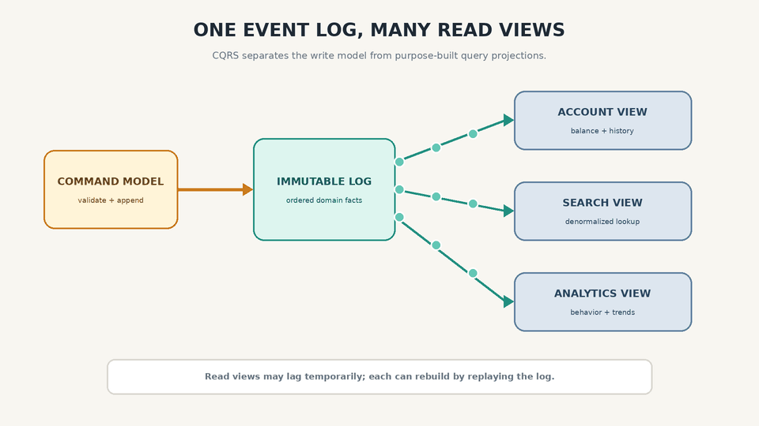

What the Stream? Phase 06
Immutable Events, CQRS, and Concurrency
Why Immutable Events Are Useful
Immutability in data systems is not a new idea. Accountants have used append-only financial ledgers for a long time. An incorrect transaction is not silently removed; a correction transaction is added so the history remains available for audit.
The same principle is useful outside finance. In a conventional shopping-cart database, the current item row may be updated or deleted. An event log can retain the earlier add and remove actions. That history may help us understand customer behavior, recover from bugs, or build a new analytical model later.
An immutable event log makes it easier to understand what happened and to rebuild what exists now.
Several Views from the Same Event Log
By separating an immutable event log from mutable state, we can derive different read-oriented representations from the same sequence of facts.
A search view can be optimized for text lookup. An account view can be optimized for balances and recent transactions. An analytics view can organize the same events around behavior and trends. If requirements change, a new projection can be created by replaying the event history.
This can simplify the write model, but it does not remove design work. Event schemas, schema evolution, partitioning, and projection access patterns still require deliberate decisions.
Command Query Responsibility Segregation, or CQRS, separates the command model used for writes from the query model used for reads. Multiple read projections are common, but CQRS does not require event sourcing, and event sourcing does not automatically require many read views.
Denormalization also remains relevant. Read projections are often intentionally denormalized so that application queries are simple and fast.

Concurrency and Read-View Consistency
CDC consumers and event-sourced projections are commonly updated asynchronously. A write may be safely recorded in the event log before it becomes visible in a read view. The user can temporarily see stale data.
There are several ways to handle this:
- Atomic update: update the log and view in one transaction when both share a transactional boundary.
- Projection version: wait until the read view reaches the version produced by the user’s command.
- Read from the write model: use the authoritative write state for an immediate read-your-writes response.
- Explicit eventual consistency: show the user that the view is still updating.
Self-contained events can reduce external lookups, but they do not remove concurrency concerns. Concurrent commands, ordering, stale projections, and conflicting updates still exist.
Co-partitioning an event log and state can provide deterministic ordering for a key and may enable atomic processing when the platform supports transactions. It does not make arbitrary cross-key actions atomic or remove every source of nondeterminism.
Immutability and Deletion
Storage is affordable enough that many applications retain long histories, but retention is not only a technical choice. Regulations may require deletion of personally identifiable information.
Deletion must be handled across live stores, indexes, caches, replicas, and backups. Simply making information difficult to retrieve may not satisfy an erasure obligation.
Event-sourced systems often reduce this risk by keeping sensitive data outside immutable events, storing references instead of raw values, or encrypting sensitive fields so that destroying a key can make the data unreadable where legally appropriate.
Immutability is a powerful system property, but it is not permission to ignore data lifecycle and privacy requirements.